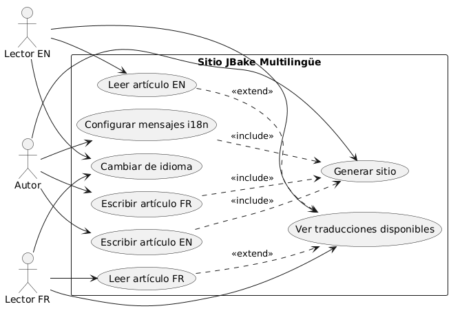
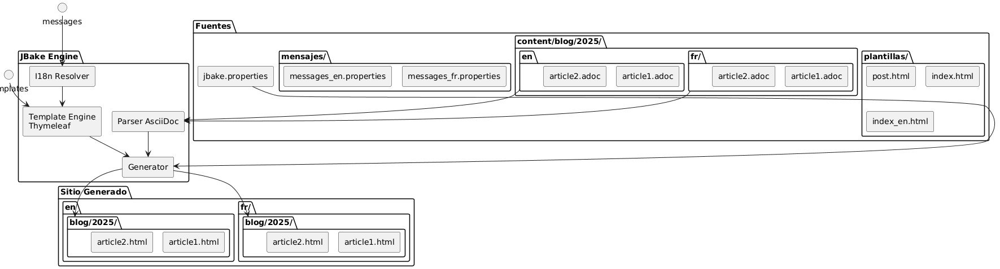
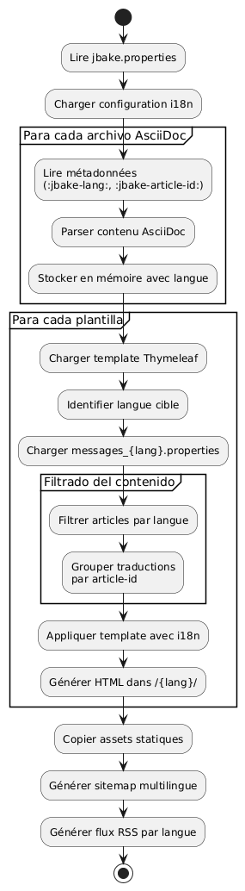

Internacionalización de un sitio estático JBake con Thymeleaf
Publié le 20 October 2025
Introduction
La internacionalización (i18n) de un sitio estático puede parecer compleja a primera vista, pero JBake combinado con Thymeleaf ofrece soluciones elegantes para crear un sitio multilingüe. En este artículo, les voy a mostrar cómo he implementado la i18n en mi blog, cubriendo tanto el templating como la gestión de los artículos en varios idiomas.
Diagrama de casos de uso (Use Case)

Arquitectura de la internacionalización
Nuestro enfoque se basa en dos pilares:
-
La i18n del templatinguso de los archivos de mensajes de Thymeleaf para los elementos de la interfaz
-
La i18n del contenido: organización de los artículos por idioma en una estructura de carpetas dedicada
Diagrama de estructura (Organización de los archivos)

¿Por qué este enfoque?
Esta separación permite :
-
Mantener una coherencia en la interfaz cualquiera que sea el idioma
-
Gestionar de forma independiente el contenido y las traducciones de los artículos
-
Facilitar la adición de nuevos idiomas sin una refactorización importante
-
Permitir artículos disponibles solo en algunos idiomas
Diagrama de componentes

I18n del templating con Thymeleaf
Estructura de los archivos de mensajes
El primer paso consiste en crear los archivos de propiedades para cada idioma soportado :
src/jbake/templates/
├── messages.properties # Fallback par défaut
├── messages_fr.properties # Français
├── messages_en.properties # Anglais
└── messages_de.properties # AllemandContenido de los archivos de mensajes
Este es un ejemplo de archivo`messages_fr.properties`:
# Navigation
nav.home=Accueil
nav.blog=Blog
nav.about=À propos
nav.contact=Contact
# Articles
article.readmore=Lire la suite
article.published=Publié le
article.tags=Étiquettes
article.also.available=Également disponible en
# Interface
site.title=Mon Blog Technique
site.description=Partage de connaissances et expériences
footer.copyright=© 2025 Tous droits réservés
search.placeholder=Rechercher un article...Y su equivalente en inglés`messages_en.properties`:
# Navigation
nav.home=Home
nav.blog=Blog
nav.about=About
nav.contact=Contact
# Articles
article.readmore=Read more
article.published=Published on
article.tags=Tags
article.also.available=Also available in
# Interface
site.title=My Tech Blog
site.description=Sharing knowledge and experiences
footer.copyright=© 2025 All rights reserved
search.placeholder=Search articles...Uso en las plantillas
En tus plantillas Thymeleaf, utiliza la sintaxis`#{}`para acceder a los mensajes:
<!DOCTYPE html>
<html xmlns:th="http://www.thymeleaf.org">
<head>
<title th:text="#{site.title}">Mon Blog</title>
<meta name="description" th:content="#{site.description}" />
</head>
<body>
<nav>
<a th:href="@{/}" th:text="#{nav.home}">Accueil</a>
<a th:href="@{/blog/}" th:text="#{nav.blog}">Blog</a>
<a th:href="@{/about.html}" th:text="#{nav.about}">À propos</a>
</nav>
<footer>
<p th:text="#{footer.copyright}">Copyright</p>
</footer>
</body>
</html>Diagrama de secuencia - Resolución i18n
Failed to generate image: PlantUML preprocessing failed: [From <input> (line 5) ]
@startuml
actor Auteur
participant JBake
participant "AsciiDoc\nAnalizador" as parser
participant "Thymeleaf
^^^^^
Syntax Error? (Assumed diagram type: sequence)
@startuml
actor Auteur
participant JBake
participant "AsciiDoc\nAnalizador" as parser
participant "Thymeleaf
Engine" as thymeleaf
participant "I18n
Resolutor" as i18n
database "messages_*.properties" as messages
Auteur -> JBake: jbake -b
activate JBake
JBake -> parser: Lire article.fr.adoc
activate parser
parser --> JBake: Contenu + métadonnées\n(lang=fr, article-id=xyz)
deactivate parser
JBake -> parser: Lire article.en.adoc
activate parser
parser --> JBake: Contenu + métadonnées\n(lang=en, article-id=xyz)
deactivate parser
JBake -> thymeleaf: Générer page FR
activate thymeleaf
thymeleaf -> i18n: Résoudre #{nav.home}
activate i18n
i18n -> messages: Lire messages_fr.properties
messages --> i18n: "Inicio"
i18n --> thymeleaf: "Inicio"
deactivate i18n
thymeleaf -> JBake: Rechercher traductions\n(article-id=xyz, lang!=fr)
JBake --> thymeleaf: article.en.html trouvé
thymeleaf --> JBake: /fr/blog/article.html
deactivate thymeleaf
JBake -> thymeleaf: Générer page EN
activate thymeleaf
thymeleaf -> i18n: Résoudre #{nav.home}
activate i18n
i18n -> messages: Lire messages_en.properties
messages --> i18n: "Inicio"
i18n --> thymeleaf: "Inicio"
deactivate i18n
thymeleaf -> JBake: Rechercher traductions\n(article-id=xyz, lang!=en)
JBake --> thymeleaf: article.fr.html trouvé
thymeleaf --> JBake: /en/blog/article.html
deactivate thymeleaf
JBake --> Auteur: Site généré
deactivate JBake
@enduml
Configuración de la localización en JBake
En su archivo`jbake.properties`, establezca la configuración regional predeterminada :
# Locale par défaut
thymeleaf.locale=fr
# Encodage
template.encoding=UTF-8I18n de los artículos : organización por carpetas
Diagrama de flujo (Flow) - Generación

Estructura de carpetas
En lugar de usar sufijos en los nombres de archivos, he optado por una organización por carpetas que ofrece más claridad y mantenibilidad:
content/blog/
├── 2024/
│ ├── fr/
│ │ ├── introduction-jbake.adoc
│ │ ├── guide-thymeleaf.adoc
│ │ └── astuces-asciidoc.adoc
│ └── en/
│ ├── introduction-jbake.adoc
│ ├── thymeleaf-guide.adoc
│ └── asciidoc-tips.adoc
└── 2025/
├── fr/
│ └── internationalisation-jbake.adoc
└── en/
└── jbake-internationalization.adocVentajas de este enfoque
Esta estructura presenta varias ventajas :
-
Separación clara: cada lengua tiene su propio espacio
-
Nomenclatura flexible: los archivos pueden tener nombres diferentes según el idioma
-
escalabilidad: fácil de agregar un nuevo idioma
-
Organización natural: sigue la lógica temporal de JBake
Metadatos de los artículos
Cada artículo debe contener metadatos para permitir el enlace entre traducciones. Aquí tienes un ejemplo :
Versión francesa(2025/fr/internationalisation-jbake.adoc) :
= Internationalisation d'un site statique JBake
:jbake-type: post
:jbake-status: published
:jbake-date: 2025-10-20
:jbake-lang: fr
:jbake-article-id: jbake-i18n-thymeleaf
:jbake-tags: jbake, thymeleaf, i18n
:jbake-description: Guide pour mettre en place l'i18n avec JBakeVersión inglesa(2025/en/jbake-internationalization.adoc):
= Internationalizing a JBake Static Site
:jbake-type: post
:jbake-status: published
:jbake-date: 2025-10-20
:jbake-lang: en
:jbake-article-id: jbake-i18n-thymeleaf
:jbake-tags: jbake, thymeleaf, i18n
:jbake-description: Guide to implement i18n with JBakeNOTA: El atributo`:jbake-article-id:`es crucial: permite vincular las diferentes traducciones de un mismo artículo.
Configuración de URL
en`jbake.properties`, configure el patrón de URL para incluir el idioma :
# Pattern d'URL avec langue
post.permalink.pattern=:lang/blog/:year/:name.html
# Langue par défaut
site.default.lang=frEsto generará URL del tipo:
-
/fr/blog/2025/internationalisation-jbake.html -
/en/blog/2025/jbake-internationalization.html
Plantillas para la visualización multilingüe
Plantilla de artículo con selector de idioma
Cree una plantilla`post.html`que muestra las traducciones disponibles:
<!DOCTYPE html>
<html xmlns:th="http://www.thymeleaf.org">
<head>
<title th:text="${content.title}">Article</title>
</head>
<body>
<article>
<header>
<h1 th:text="${content.title}">Titre</h1>
<div class="article-meta">
<time th:text="${#dates.format(content.date, 'dd MMMM yyyy')}"
th:attr="datetime=${#dates.format(content.date, 'yyyy-MM-dd')}">
Date
</time>
<!-- Sélecteur de traductions -->
<div class="translations" th:if="${content['article-id']}">
<span th:text="#{article.also.available}">Aussi disponible en :</span>
<ul class="language-list">
<li th:each="post : ${published_posts}"
th:if="${post['article-id'] == content['article-id'] and post.lang != content.lang}">
<a th:href="${post.uri}"
th:text="${post.lang.toUpperCase()}">
LANG
</a>
</li>
</ul>
</div>
</div>
</header>
<div class="content" th:utext="${content.body}">
Contenu de l'article
</div>
<footer class="article-footer">
<div class="tags" th:if="${content.tags}">
<span th:text="#{article.tags}">Étiquettes :</span>
<span th:each="tag : ${content.tags}">
<a th:href="@{/tags/{tag}.html(tag=${tag})}"
th:text="${tag}">tag</a>
</span>
</div>
</footer>
</article>
</body>
</html>Índice filtrado por idioma
Cree plantillas de índice para cada idioma:
index.html(índice francés) :
<!DOCTYPE html>
<html xmlns:th="http://www.thymeleaf.org">
<head>
<title th:text="#{site.title}">Mon Blog</title>
</head>
<body>
<main>
<h1 th:text="#{nav.blog}">Blog</h1>
<div class="articles-list">
<article th:each="post : ${published_posts}"
th:if="${post.lang == 'fr'}">
<h2>
<a th:href="${post.uri}" th:text="${post.title}">Titre</a>
</h2>
<time th:text="${#dates.format(post.date, 'dd MMMM yyyy')}">
Date
</time>
<p th:text="${post.description}">Description</p>
<a th:href="${post.uri}" th:text="#{article.readmore}">
Lire la suite
</a>
</article>
</div>
</main>
</body>
</html>index_en.html(índice inglés) :
<!DOCTYPE html>
<html xmlns:th="http://www.thymeleaf.org">
<head>
<title th:text="#{site.title}">My Blog</title>
</head>
<body>
<main>
<h1 th:text="#{nav.blog}">Blog</h1>
<div class="articles-list">
<article th:each="post : ${published_posts}"
th:if="${post.lang == 'en'}">
<h2>
<a th:href="${post.uri}" th:text="${post.title}">Title</a>
</h2>
<time th:text="${#dates.format(post.date, 'dd MMMM yyyy')}">
Date
</time>
<p th:text="${post.description}">Description</p>
<a th:href="${post.uri}" th:text="#{article.readmore}">
Read more
</a>
</article>
</div>
</main>
</body>
</html>Navegación entre idiomas
Selector de idioma global
Diagrama de flujo - Lectura de usuario

Añade un selector de idioma en tu plantilla principal:
<nav class="language-switcher">
<a href="/index.html"
th:classappend="${content.lang == 'fr'} ? 'active'"
title="Français">
🇫🇷 FR
</a>
<a href="/en/index.html"
th:classappend="${content.lang == 'en'} ? 'active'"
title="English">
🇬🇧 EN
</a>
</nav>Estilo CSS para el selector
.language-switcher {
display: flex;
gap: 1rem;
padding: 0.5rem;
background: #f5f5f5;
border-radius: 4px;
}
.language-switcher a {
padding: 0.5rem 1rem;
text-decoration: none;
color: #333;
border-radius: 4px;
transition: background 0.2s;
}
.language-switcher a:hover {
background: #e0e0e0;
}
.language-switcher a.active {
background: #007bff;
color: white;
}
.translations {
margin: 1rem 0;
padding: 1rem;
background: #f8f9fa;
border-left: 4px solid #007bff;
}
.language-list {
display: inline-flex;
gap: 0.5rem;
list-style: none;
padding: 0;
margin: 0;
}
.language-list li::after {
content: "•";
margin-left: 0.5rem;
}
.language-list li:last-child::after {
content: "";
}Fuente RSS por idioma
Para tener canales RSS separados por idioma, cree plantillas distintas :
feed.xml(flujo francés) :
<?xml version="1.0" encoding="UTF-8"?>
<rss version="2.0" xmlns:th="http://www.thymeleaf.org">
<channel>
<title th:text="#{site.title}">Mon Blog</title>
<link th:text="${config.site_host}">http://example.com</link>
<description th:text="#{site.description}">Description</description>
<language>fr</language>
<item th:each="post : ${published_posts}"
th:if="${post.lang == 'fr'}">
<title th:text="${post.title}">Titre</title>
<link th:text="${config.site_host + post.uri}">Lien</link>
<pubDate th:text="${#dates.format(post.date, 'EEE, dd MMM yyyy HH:mm:ss Z')}">
Date
</pubDate>
<description th:text="${post.description}">Description</description>
</item>
</channel>
</rss>Buenas prácticas y consejos
1. Coherencia de los identificadores de artículo
Asegúrate de que`:jbake-article-id:`es idéntico para todas las traducciones del mismo artículo. Utilice un formato coherente:
-
Prefiere los identificadores en inglés para universalidad
-
Utiliza guiones para separar las palabras
-
Evite los caracteres especiales
2. Fechas consistentes
Todas las traducciones de un artículo deben tener la misma fecha de publicación`:jbake-date:`Esto facilita el ordenamiento y la visualización cronológica.
3. Etiquetas multilingües
Para las etiquetas, tienes dos opciones :
Opción 1: Etiquetas universales en inglés
:jbake-tags: java, spring-boot, microservicesOption 2 : Etiquetas traducidas con mapeo
# Version française
:jbake-tags: java, spring-boot, microservices
# Version anglaise
:jbake-tags: java, spring-boot, microservices4. Gestión de los artículos no traducidos
No es obligatorio traducir todos los artículos. Si un artículo existe solo en una lengua, simplemente no aparecerá en las listas de la otra lengua.
5. Mapa del sitio multilingüe
Genere un sitemap que incluye todos los idiomas:
<?xml version="1.0" encoding="UTF-8"?>
<urlset xmlns="http://www.sitemaps.org/schemas/sitemap/0.9"
xmlns:xhtml="http://www.w3.org/1999/xhtml"
xmlns:th="http://www.thymeleaf.org">
<url th:each="post : ${published_posts}">
<loc th:text="${config.site_host + post.uri}">URL</loc>
<lastmod th:text="${#dates.format(post.date, 'yyyy-MM-dd')}">Date</lastmod>
<!-- Liens alternatifs pour les traductions -->
<xhtml:link th:each="translation : ${published_posts}"
th:if="${translation['article-id'] == post['article-id'] and translation.lang != post.lang}"
rel="alternate"
th:attr="hreflang=${translation.lang},href=${config.site_host + translation.uri}" />
</url>
</urlset>Conclusión
La internacionalización de un sitio JBake con Thymeleaf es un enfoque robusto y mantenible. Al separar la i18n del templating (a través de los archivos de mensajes) y la i18n del contenido (a través de la organización en carpetas), obtienes un sistema flexible que puede evolucionar fácilmente.
Los puntos clave a retener :
-
Archivos de mensajes Thymeleafpara la interfaz de usuario
-
Organización por carpetas(año/idioma) para los artículos
-
Identificadores de artículopara enlazar las traducciones
-
Plantillas dedicadaspara cada idioma
-
URLs explícitasincluyendo el código de idioma
Diagrama de despliegue
Failed to generate image: PlantUML preprocessing failed: [From <input> (line 14) ]
@startuml
node "Máquina de desarrollo" {
artifact "Fuentes" {
folder "content/"
folder "templates/"
folder "assets/"
}
component "JBake CLI" as jbake
Sources --> jbake : jbake -b
}
node "Servidor de compilación
^^^^^
Syntax Error? (Assumed diagram type: component)
@startuml
node "Máquina de desarrollo" {
artifact "Fuentes" {
folder "content/"
folder "templates/"
folder "assets/"
}
component "JBake CLI" as jbake
Sources --> jbake : jbake -b
}
node "Servidor de compilación
(CI/CD)" {
component "GitHub Actions
o GitLab CI" as ci
jbake --> ci : push
}
cloud "CDN / Alojamiento" {
node "Servidor web estático" {
artifact "Sitio Generado" {
folder "/es/blog/"
folder "/es/blog/"
folder "/assets/"
}
}
}
ci --> "Sitio Generado" : déploiement
actor "Lectores" as users
users --> "Servidor web estático" : HTTPS
@enduml
Esta arquitectura le permite comenzar fácilmente con dos idiomas y agregar otros sin una refactorización importante. Todo permanece completamente estático y de alto rendimiento, fiel a la filosofía de JBake.
¡Buen desarrollo multilingüe! 🌍